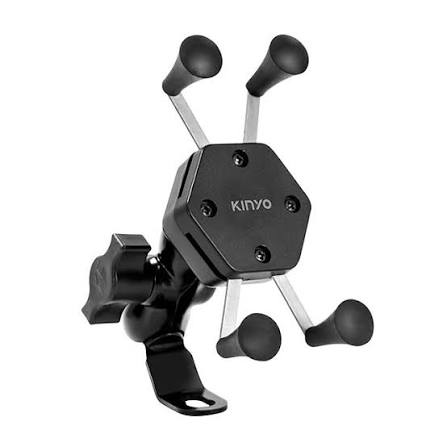
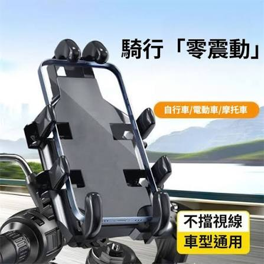
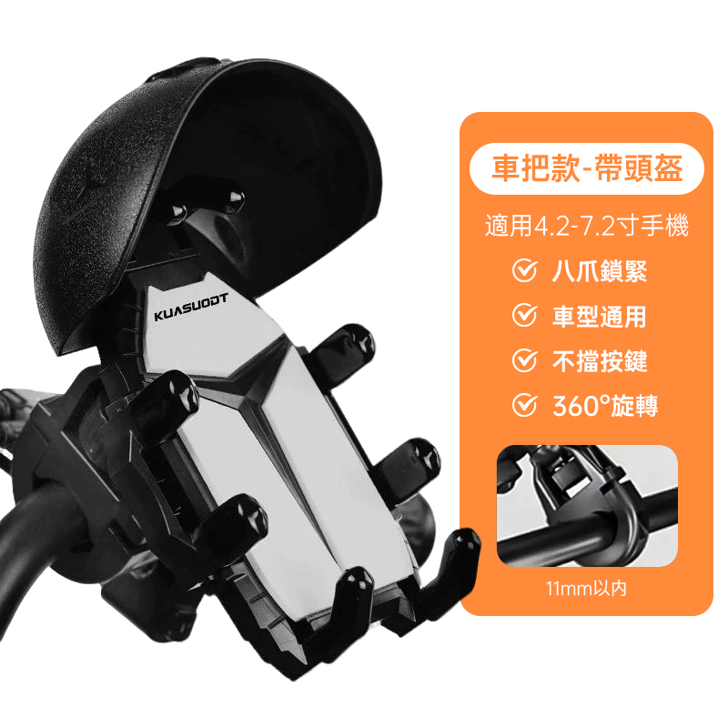

通勤、跑山、外送，高CP值穩固防護！

NT$ 299
尺寸：適用 4.7-6.5吋 (最大厚度 12mm)
運費：超取 $60 / 憑學生證 $0 (免運)

NT$ 590
尺寸：適用 5.5-7.2吋 (最大厚度 16mm，可裝軍規殼)
運費：超取 $60 / 憑學生證 $0 (免運)

NT$ 650
尺寸：適用 4.7-7.2吋 (附快拆遮陽小雨傘)
運費：超取 $60 / 憑學生證 $0 (免運)
A：可以！我們的「跑山防震款」最大支援到 16mm 厚度，市面常見軍規防摔殼（如犀牛盾、UAG）皆可輕鬆裝入。
A：「跑山防震款」內建高彈性減震矽膠墊，能大幅降低震動頻率，保護手機 OIS 光學防手震元件不受損。
A：全系列皆採免工具快拆設計，徒手旋轉後照鏡底座螺絲即可完成安裝，1分鐘內輕鬆搞定。